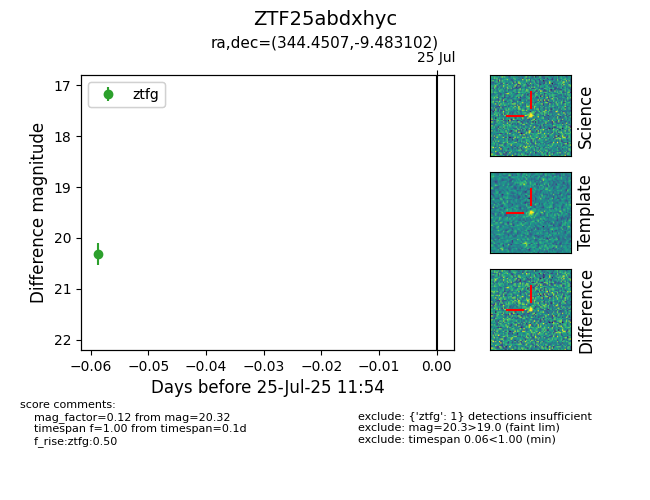

Target ZTF25abdxhyc at 2025-07-25 11:54, see:
FINK: fink-portal.org/ZTF25abdxhyc
Lasair: lasair-ztf.lsst.ac.uk/objects/ZTF25abdxhyc
ALeRCE: alerce.online/object/ZTF25abdxhyc
alt names
ZTF25abdxhyc (ztf,fink)
coordinates:
equatorial (ra, dec) = (344.4507,-9.48310)
galactic (l, b) = (60.8797,-57.91278)
photometry
last ztfg=20.32
1 ztfg detections
